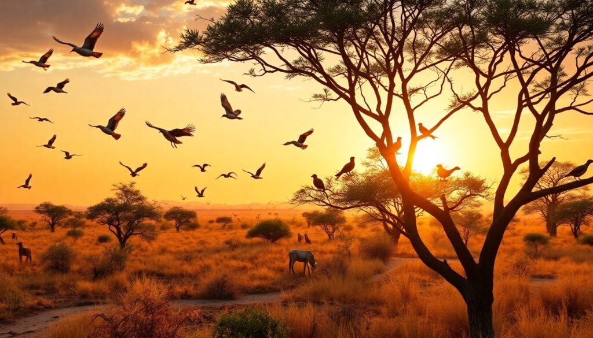

Características Principales
Las principales características de los ecosistemas aeroterrestres son las siguientes:
- Se desarrollan en la combinación del suelo y el aire, permitiendo que los organismos transiten tanto por la superficie como por la atmósfera.
- Los animales que lo habitan poseen adaptaciones para el vuelo o el desplazamiento ágil, como alas, plumas o estructuras corporales ligeras.
- La disponibilidad de oxígeno y las corrientes de aire juegan un papel fundamental en la movilidad, el desplazamiento y la distribución de las especies.
- Facilitan la polinización y la dispersión de semillas a grandes distancias gracias a la acción conjunta del viento y los animales voladores.
- Presentan una gran interacción con el clima, ya que las aves y los insectos voladores son muy sensibles a los cambios de temperatura y humedad ambiental.
- Permiten el desarrollo de especies migratorias que recorren grandes distancias aprovechando las condiciones favorables de distintas regiones.